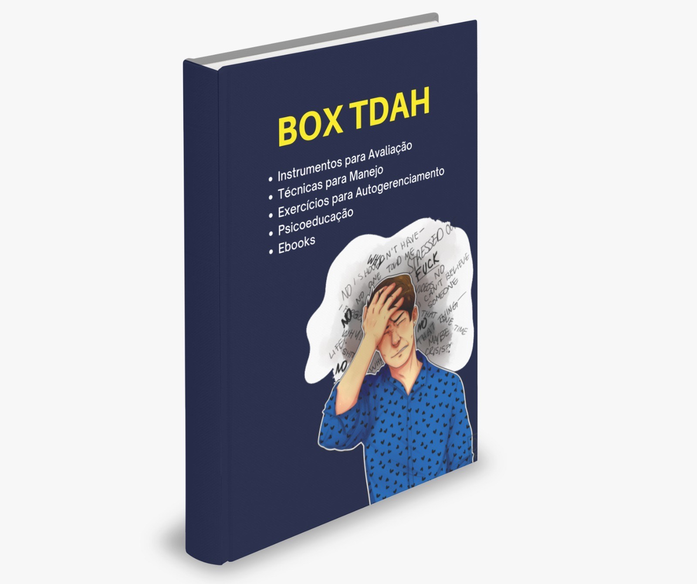

Não deixe mais a ansiedade controlar você
Mudanças práticas para reduzir sintomas e retomar o controle da rotina.
Ver e-bookBrasiliense, Pai, Determinado e Sonhador. Formado em Psicologia pelo IESB, Maycon construiu sua trajetória combinando estudo intenso, experiência clínica e envolvimento constante com a formação de novos profissionais. Especialista em psicanálise clínica, sexualidade humana, transtornos de humor e transtorno bipolar, atua também com hipnoterapia e outras abordagens integrativas.
Desde 2016, realizou mais de 14 mil atendimentos em diferentes contextos, acolhendo pessoas em sofrimento emocional, casais em crise, famílias em conflito e profissionais em supervisão. É presença ativa nas redes sociais pelo perfil @terapeutamaycon, onde compartilha reflexões sobre vínculos, sofrimento psíquico e saúde mental de forma ética, acessível e responsável.
Ver Instagram do Maycon BarbozaO trabalho clínico de Maycon Barboza é sustentado por uma escuta psicanalítica profunda, aliada a uma postura ética e realista. Cada paciente é recebido como alguém único, com história, tempo e limites próprios, e não como um “caso” a ser encaixado em rótulos prontos.
Quando necessário, integra recursos como hipnoterapia, intervenções breves, orientação psicoeducativa e supervisão de rede de apoio, sempre avaliando o que faz sentido para aquela pessoa naquele momento. As principais demandas atendidas envolvem vínculos afetivos, solidão, transtornos de humor, lutos, sexualidade, conflitos familiares, questões de identidade e sofrimento relacionado ao trabalho.
O objetivo não é apenas aliviar sintomas, mas favorecer mudanças estruturais: compreender repetições, nomear o que dói, elaborar experiências e construir novas formas de se relacionar consigo, com o outro e com o mundo.
Conheça as principais formas de cuidado disponíveis. Para saber valores, converse com a Assistente Yara no canto inferior da tela.
A triagem é o primeiro passo. É uma conversa estruturada para mapear suas queixas, sua história e o que você está buscando. A partir dela, Maycon avalia se o melhor caminho é psicoterapia, psicanálise, hipnoterapia, encaminhamento médico ou outros recursos.
É obrigatória antes de iniciar qualquer processo terapêutico, porque garante cuidado, direção e segurança para o trabalho clínico.
Espaço de fala e escuta para trabalhar sofrimento emocional, ansiedade, depressão, conflitos de relacionamento, decisões de vida e crises em geral. Acontece por meio de encontros regulares, em clima de acolhimento e confidencialidade.
O objetivo é ampliar consciência, desenvolver recursos de enfrentamento e produzir mudanças concretas no modo de viver e se relacionar.
Processo mais aprofundado, voltado para o inconsciente e para aquilo que se repete na sua vida sem que você entenda bem o porquê. A associação livre é o eixo do trabalho: falar sem censura para permitir que algo novo apareça.
Não é técnica de relaxamento: é um caminho de confronto consigo mesmo, para deixar de “dormir na vida” e assumir o próprio desejo.
Uso clínico da hipnose como ferramenta complementar. Ajuda a acessar conteúdos profundos, ressignificar experiências e aliviar sintomas ligados a traumas, fobias, hábitos e dores emocionais.
É conduzida de forma ética e segura, com foco em ampliar a consciência e favorecer mudanças duradouras.
Atendimento conjunto para casais que desejam compreender a dinâmica da relação, reduzir conflitos e reconstruir confiança. O foco é trabalhar comunicação, acordos, responsabilidade de cada um e a história do vínculo.
Ajuda o casal a sair de ciclos repetitivos de briga, silêncio ou afastamento, favorecendo decisões mais conscientes sobre permanecer, transformar ou encerrar a relação.
Voltada a pais, mães ou responsáveis que enfrentam dificuldades com limites, comportamento, rotina e diálogo com crianças ou adolescentes.
O objetivo é oferecer novas estratégias educativas e de comunicação, fortalecendo a presença parental e a construção de vínculos mais seguros.
Acompanhamento de questões ligadas à vida sexual e afetiva: dificuldade de desejo, prazer, excitação, orgasmo, bloqueios e conflitos conjugais relacionados à sexualidade.
O trabalho considera aspectos emocionais, corporais e relacionais, sem moralismo, com respeito à singularidade de cada história.
Espaço para psicólogos, estagiários e recém-formados discutirem casos, dúvidas técnicas e posicionamento ético. Ajuda a sustentar o lugar de terapeuta com mais segurança.
Inclui discussão de casos, elaboração de hipóteses, treino de intervenções e reflexão sobre a própria prática clínica.
Modalidade em que terapeuta e paciente não precisam estar conectados ao mesmo tempo. A comunicação acontece por áudios ou mensagens de texto, em dias combinados.
É uma forma moderna de acompanhamento para quem tem rotina mais flexível ou prefere se expressar por escrito ou por áudios ao longo da semana.
Processo estruturado que envolve entrevistas e, quando necessário, aplicação de testes psicológicos para compreender funcionamento emocional, cognitivo e comportamental.
Pode ser utilizada para fins clínicos, cirúrgicos, educacionais ou jurídicos (como bariátrica, vasectomia, laqueadura, TDAH, entre outros).
Atividades psicoeducativas para escolas, empresas e eventos. Trabalham temas como saúde mental, vínculos, emoções, comunicação e prevenção ao adoecimento psíquico.
Podem ser desenhadas sob medida para a demanda da instituição, sempre com linguagem acessível e embasamento técnico.
A formação livre em psicanálise clínica é indicada para quem quer aprender sobre psicanálise, seja para atuar como psicanalista futuramente, pesquisar ou aprimorar a sua prática profissional.
Visão geral da formação livre em Psicanálise Clínica (39 meses — Instituto LivreMent).
O Analista Reativo é um recurso baseado em Inteligência Artificial treinado com o estilo clínico, a escuta e a forma de levantar reflexões do Maycon Barboza. Ele existe para te acompanhar entre uma sessão e outra.
Você escreve. Ele responde. Não com frases prontas, mas com perguntas, devolutivas e provocações internas, como um espaço de continência quando algo acontece e o próximo encontro ainda não chegou.
É útil quando surge uma angústia no meio da semana, um pensamento que não te larga, um conflito que precisa ser elaborado ou uma questão que você deseja refletir antes da sessão.
Não é terapia e não substitui o processo clínico.
É IA. Uma extensão do trabalho, um apoio psíquico para manter o pensamento vivo.
Acesso Exclusivo Para Pacientes.
Psicologia, psicanálise, sexualidade, saúde mental, reflexões sobre subjetividade, comportamento e relações humanas, temas do cotidiano e muito mais.
Episódios curtos, pensados para quem tem uma rotina corrida e ainda assim quer manter o pensamento em movimento.
Esse é o “Fala Terapeuta”, com Maycon Barboza. Pega um café e se acomoda.
Coleção de materiais digitais para quem quer evoluir na clínica: e-books, ferramentas técnicas, modelos de intervenção e conteúdos de estudo criados por Maycon Barboza. Acesse cada material para ver descrição e adquirir.
Mudanças práticas para reduzir sintomas e retomar o controle da rotina.
Ver e-bookCompreensão clínica e orientações para manejo da depressão no cotidiano.
Ver e-bookGuia prático de reconexão com o corpo, prazer e consciência sensorial.
Ver e-bookMais de 70 modelos de documentos para organizar a prática clínica.
Ver e-bookColeção de materiais para estudo contínuo em psicologia e clínica.
Ver e-book
Instrumentos, técnicas e psicoeducação para avaliação e manejo do TDAH.
Ver e-bookMateriais focados em funcionamento borderline e estratégias de manejo.
Ver e-bookMais de 700 perguntas para aprofundar a escuta e destravar sessões.
Ver e-bookOs dados informados são utilizados apenas para contato e retorno de mensagens. Não são vendidos ou compartilhados com terceiros.